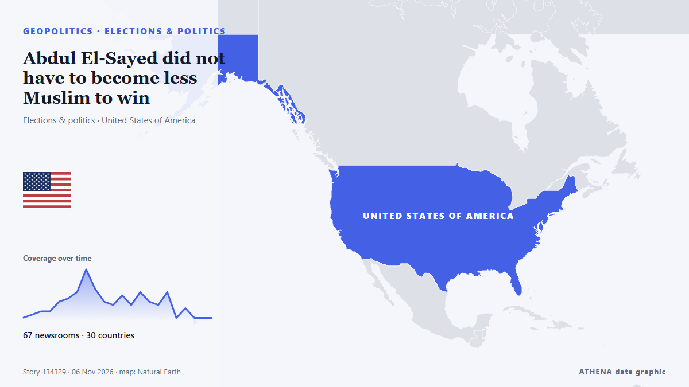

Abdul El-Sayed did not have to become less Muslim to win

With New Hampshire and Georgia staying in Democratic hands, Republicans now look to Michigan for a pickup, where Democrat Abdul El-Sayed is competing with Republican Mike Rogers. de France 24 English
Informado de forma independiente por 66 medios de 30 países desde el 3 nov; el primero fue Rolling Stone; la cobertura va perdiendo fuerza. ATHENA califica el riesgo como elevado (4.1/10), sobre todo por la gravedad del daño descrito y su alcance geográfico y sectorial. La confianza es del 89 % (alta): lo corroboran 66 medios independientes, con una fiabilidad media de las fuentes del 74 %. Medios por país: Estados Unidos (13), Francia (7), Singapur (2). Cobertura: del 3 nov al 4 nov, 22 horas.
Por qué importa: Los hechos de seguridad y diplomacia pueden alterar alianzas, comercio y mercados mucho más allá de los países implicados.
Qué ha cambiado: 29 informaciones nuevas de 25 redacciones en las 24 horas hasta el 6 nov.
Primer titular: Midterms: Abdul El-Sayed, Mike Rogers face off for Michigan Senate seat
Los titulares se muestran en inglés, tal como se publicaron.
De un vistazo
Seleccionado, puntuado y redactado por la metodología publicada de ATHENA. Ningún editor interviene en eventos concretos. Cómo se elabora ›
| 03 Nov 18:30 UTC | 1 |
|---|---|
| 03 Nov 21:30 UTC | 2 |
| 04 Nov 00:30 UTC | 3 |
| 04 Nov 03:30 UTC | 3 |
| 04 Nov 06:30 UTC | 6 |
| 04 Nov 09:30 UTC | 7 |
| 04 Nov 12:30 UTC | 9 |
| 04 Nov 15:30 UTC | 16 |
| 04 Nov 18:30 UTC | 10 |
| 04 Nov 21:30 UTC | 6 |
| 05 Nov 00:30 UTC | 5 |
| 05 Nov 03:30 UTC | 8 |
| 05 Nov 06:30 UTC | 5 |
| 05 Nov 09:30 UTC | 9 |
| 05 Nov 12:30 UTC | 6 |
| 05 Nov 15:30 UTC | 5 |
| 05 Nov 18:30 UTC | 9 |
| 05 Nov 21:30 UTC | 1 |
| 06 Nov 00:30 UTC | 4 |
| 06 Nov 03:30 UTC | 1 |
| 06 Nov 06:30 UTC | 1 |
| 06 Nov 09:30 UTC | 5 |
| 06 Nov 12:30 UTC | 1 |
Por qué estas cifras
Importancia
Riesgo
Confianza
La cobertura: quién informó y cuándo
titular tal como se publicó · abre el original- Rolling Stone · Estados UnidosCan Dems Actually Win the Senate? Here’s a State-by-State Guide
- The Hill · Estados UnidosSullivan campaign, NRSC form 'recount fund' for Alaska Senate race
- The Straits Times · SingapurUS midterms: Alaska Republican Dan Sullivan accuses Democrats of planting ‘decoy’ Daniel J. Sullivan
- The Daily Star — page reader · BangladésAlaskan in tight Senate race accuses Dems of 'election cheating'
- France 24 English · FranciaMidterms: Abdul El-Sayed, Mike Rogers face off for Michigan Senate seat
- PBS NewsHour · Estados UnidosMaryland voters pass Democratic-backed redistricting amendment
- The Independent · Reino UnidoCNN nails election night with gas prices highlighted on ‘magic wall’ during midterms returns
- Gothamist (New York City) · Estados UnidosRepublican Jeff Van Drew concedes NJ congressional seat in surprise victory for Democrats
- NPR · Estados UnidosOn a historic night for democratic socialists, Mamdani says midterms show power of working-class voters
- The Hill · Estados UnidosForstag flips Montana House seat, beating Trump-backed opponent
- NPR · Estados UnidosRepublicans tried to gerrymander their way out of big congressional losses. It didn't work
- France 24 English · FranciaMidterms: What impact did redistricting in California and Texas have?
- Khaama Press · AfganistánAbdul El-Sayed Wins Michigan Senate Race, Becomes First Muslim US Senator
- France 24 English · Francia'The mood got better and better as the night went on': Dems celebrate midterms victory
- The Canadian Press (via CityNews) · CanadáDemocrats deliver a stunning rout in Texas to retake power for the first time in decades
- France 24 English · FranciaAbdul El-Sayed set to become first Muslim senator after win in Michigan
- France 24 English · Francia'A generational win' for Dems as blue wave sweeps midterms
- Ship.Energy · INTClimate NGOs hope Democrats’ US midterm victory could spark breakthrough on IMO’s NZF
- The New Arab · INTPalestinian-American Rashida Tlaib wins re-election in Michigan
- Premium Times · NigeriaHistory in US as Americans elect first Muslim, native American senators, other firsts too
- The Straits Times · Singapur'A mandate for change': Democrats remake Texas politics in election rout
- Egyptian Streets · EgiptoEgyptian-American Abdul El-Sayed Wins Michigan Senate Seat, Becoming First Muslim Senator
- Montana Free Press · Estados UnidosAP calls it: Democrat Sam Forstag defeats Flint in Western House flip
- CommonDreams · Estados UnidosYouth Vote Delivers Historic Victories in Michigan and Nationwide
- Euronews English · Francia'A feeling of redemption': Young voters in Maine hail Democratic victory
- TASS (English) · RusiaDemocratic win and Trump’s reaction to outcome of midterm Congressional election
- Aravot (English) · ArmeniaAbdul El-Sayed Wins Michigan Senate Race
- Türkiye Today · TurquíaUS midterms redraw the map of power in Washington
- Indian Express · IndiaFrom El-Sayed to ‘mini Mamdanis’: US midterm 2026 wins deepen Netanyahu’s political troubles
- Times of India · IndiaTrump loses war at home: Democrats storm red bastions, seize both House and Senate
- The Independent · Reino UnidoSky News reporter responds after heated El-Sayed confrontation: ‘Disappointing’
- Mehr News (English) · IránTrump’s economic plan against Iran backfired: Hemmati
- Rolling Stone · Estados UnidosFrom ‘Talafreako’ Tees to Anti-Trump Towels, Etsy Sellers Celebrate Democrats’ Midterm Win With New Merch
- Al Jazeera English · CatarDemocratic voters celebrate El-Sayed’s Michigan win in election ‘blue wave’
- The Hollywood Reporter · Estados UnidosWhat Abdul El-Sayed’s Wild, Historic Ride to the Senate Means to One Michigander
- Billboard · Estados UnidosThe Chicks Celebrate Democrats’ Historic ‘Blunami’ Midterm Election Victory With Two-Word Message to President: ‘F–k Trump’
- France 24 English · FranciaTale of 2 midterms: Republican redistricting 'backfired' while Democrats 'exceeded all expectations'
- TRT World · TurquíaSouth Africa leader sees 'new era' in US ties after Democrat victory
- CNBC World · Estados UnidosWhat Republicans' huge loss means for Trump